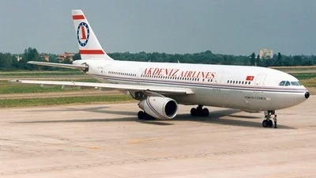

A
B
O
U
T
U
S
Akdeniz Airlines made its first flight in June 1995. Akdeniz Airlines, which started its flights again after a long hiatus, offers flights to 50 destinations in 20 countries and to 18 destinations on domestic lines. Don't forget to book your ticket with Akdeniz Airlines for a comfortable flight experience.
